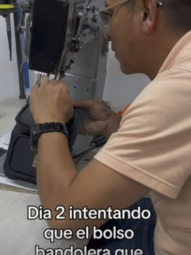
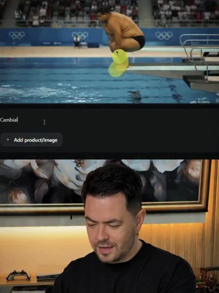
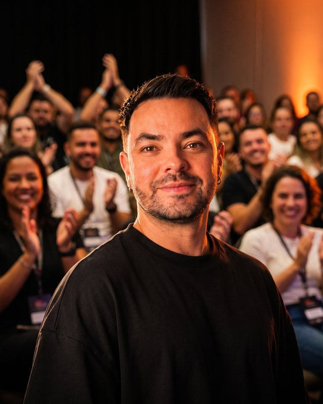

IA Viralidad Negocios
Jhei Trujillo
Hago que te vean y te recuerden.
- Talleres
- Guiones
- Virales
- IA aplicada
- Comunidad
Casos de éxito
Gente y marcas con las que he construido cosas
-
-
-
-
-
-

-
-
-


Sobre mí
Jhei Trujillo — IA Growth Strategist
@jheitrujillob
Soy el fundador de AIVI, la plataforma de IA en español más grande para emprendedores hispanos. Llevo más de 8 años en estrategia de contenido viral y crecimiento digital. Construí y operé una agencia real en LATAM antes de convertir mi metodología en tecnología.
No enseño teoría — te muestro lo que funciona en pantalla, con negocios reales y números reales. Mi misión es que tú también domines la IA, sin importar tu nivel técnico.
- 8+ años de experiencia
- 5,500+ estudiantes formados
- 700+ negocios asesorados